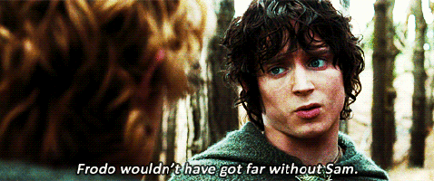
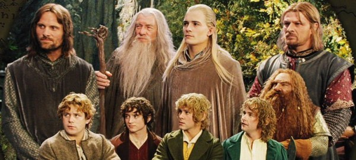
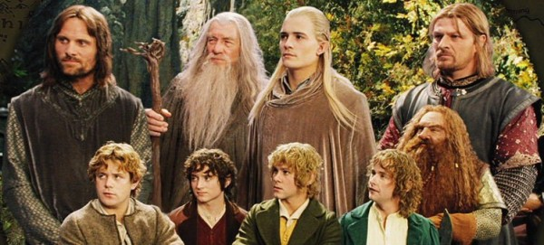

Original Theatrical Date: December 19, 2001
Genre: Sci-Fi/Fantasy/Action/Adventure
OSCAR WINNER:
Best Cinematography
Best Makeup
Best Visual Effects
Best Original Score
Budget:$93,000,000 (estimated)
Cumulative Worldwide Gross: $871,530,324, 25 November 2011
Runtime: 178 min
IMDb: 8,8/10
source
Based on J. R. R. Tolkien's masterpiece,
The Lord of the Rings: The Fellowship of the Ring is an epic adventure of good against evil,
the power of friendship and individual courage.

An ancient Ring thought lost for centuries has been found, and through a strange twist in fate has been given to a small Hobbit named Frodo.
When Gandalf discovers the Ring is in fact the One Ring of the Dark Lord Sauron,
Frodo must make an epic quest to the Cracks of Doom in order to destroy it!
However he does not go alone. He is joined by Gandalf, Legolas the elf, Gimli the Dwarf, Aragorn,
Boromir and his three Hobbit friends Merry, Pippin and Samwise.
 

Through mountains, snow, darkness, forests, rivers and plains,
facing evil and danger at every corner the Fellowship of the Ring must go. Their quest to destroy the One Ring is the only hope
for the end of the Dark Lords reign!
source
Made by Elif Köseler